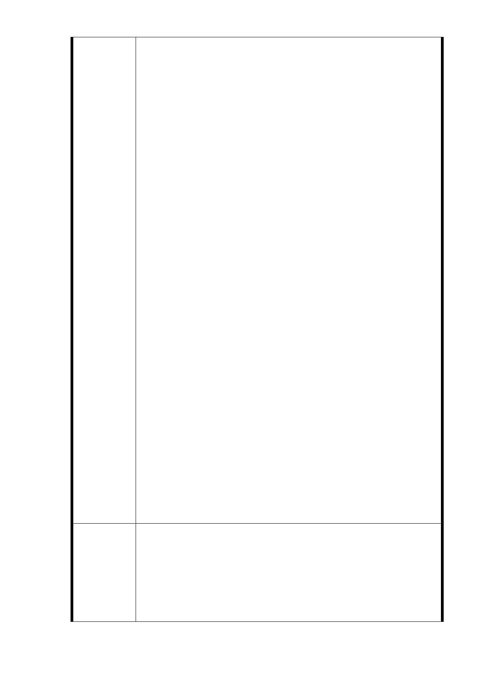

梯大樓未在設想範圍內, 如硬以僵固思維及不適法條強
行套入, 無異將住戶掃地出門, 流離失所, 無以為家,
如此行事必招民怨, 導致抗爭之局面. 在此情況下, 強
烈要求將 351 地號排除於聯合開發範圍內, 並要求捷運局
施工單位做好工安措施, 以免造成鄰損, 浪費公帑做為
賠償. 而且依據北市信義區區公所於本年 8 月 26 日辦理
100 年度＂市長與民有約＂座談會, 郝市長裁示聯開案應
以保護住戶(351 地號)權益為原則, 由當事人自行決定是
否參加聯合開發(附件六).
2. 目前 351 地號七層樓電梯大廈之房價遠高於鄰邊 40 餘年
老舊四層樓公寓, 如以目前不適條件參加聯開, 只會落
得三房變套房之窘境, 而且因權狀坪數大幅縮水, 房屋
價值也將低於不參加聯開日後之價值. 但如果台北市政
府經通盤考量, 仍覺得土地開發是必須推展方針, 則本
人同意配合 郝市長＂室內坪一坪換一坪＂之政策, 共同
參與聯合開發案.
3. 本 351 地號因位於 R04 車站土地開發位置正中央, 容或以
往設計法案時未能思維至此特殊狀況, 仍寄望市政府能
以前瞻之思考, 利民之心態及開闊之政策, , 將本地號以
專案處理方式, 放寬容積至室內坪數與原來坪數相同,
還住戶原本已略嫌狹隘之生存空間. 繼而修改都更條例,
以免日後又因相同狀況造成民怨. 四層樓住戶地情況亦
然, 依現行條例如欲分回原有面積似也不易, 應一並放
寬合理容積以符民眾該得之生活空間. 再者, 容積放寬,
捷運局亦能得以挹注更多捷運建設經費, 對市政府與所
有住戶而言實為＂雙贏＂局面.
4. 另亦可將獎勵容積設定為兩倍, 與建商之分配比率設定
為 65 : 35, 如此計算下, 四層樓住戶基本上幾乎已可達
原先室內居住面積, 七層樓住戶容積不足之處則可由捷
運局所分配之容積補足, 在此情況下, 捷運局只付出部
分容積但卻能滿足所有住戶最低需求, 並且不負政府＂
利民＂之施政方針.
1.陳情人所有 351 地號土地面積 274 ㎡，地上興建 7 層/B1
之鋼筋混凝土建築物，R04 捷二用地如未包含該筆土地時，
市 府 回 應 則 R04 站捷二用地呈凹字形，考量施工安全性、受限於「臺
意 見 北市都市更新自治條例」第 12 條規定略以：「都市更新單
元劃定基準，應符合下列規定之一：‧‧街廓內相鄰土地
業已建築完成，確無法合併更新，且無礙建築設計及市容
- 25 -